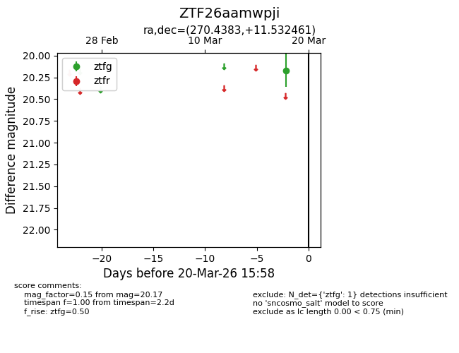
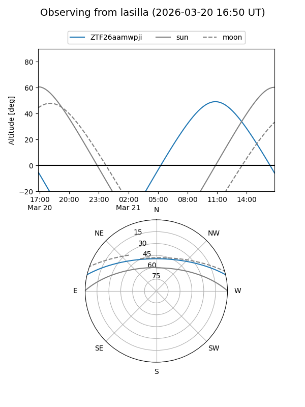
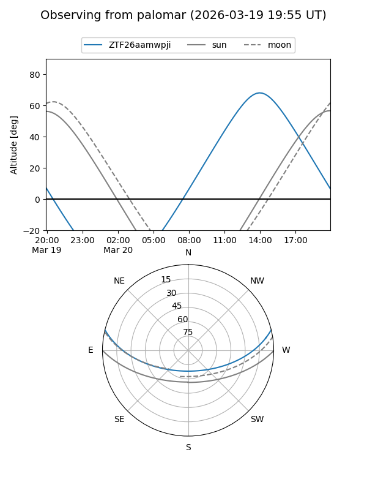

ZTF26aamwpji
Target ZTF26aamwpji at 2026-03-20 15:59
Aliases and brokers:
FINK: link
Lasair: link
ALeRCE: link
alt names
ZTF26aamwpji (ztf,fink_ztf)
Coordinates:
equatorial (ra, dec) = 270.4383,+11.53246
equatorial (HMS+DMS) = 18:01:45.19,+11:31:56.86
galactic (l, b) = (37.8198,+16.18445)
Flags:
Photometry:
last ztfg=20.17
1 ztfg detections
Lightcurve

Visibility


Additional plots